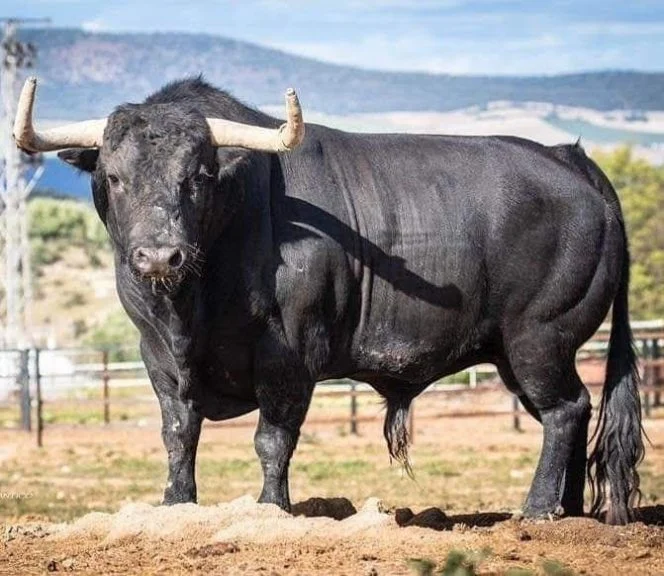
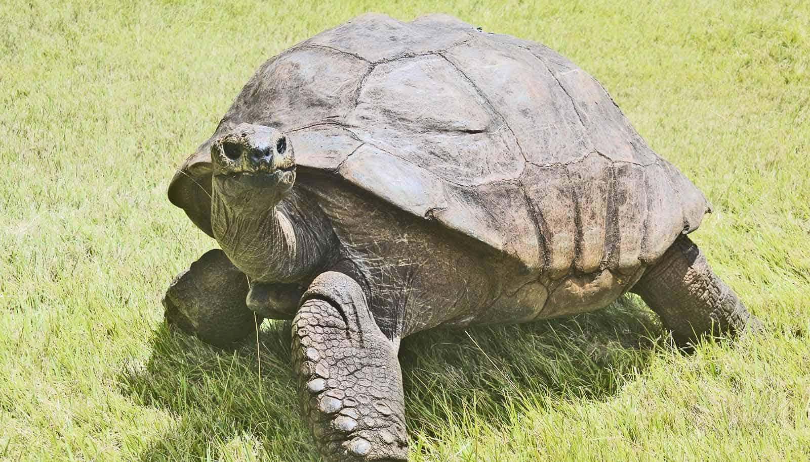

ANIMAIS
ISSO É UM TOURO
O touro é o bovino macho reprodutor, enquanto o boi é o bovino macho castrado. Ambos são herbívoros ruminantes.
ISSO É UMA TARTARUGA
tartarugas são uma ordem de répteis pertencentes ao clado Testudinata. Correspondem a 14 famílias que possuem em torno de 356 espécies, que ocorrem em regiões tropicais e temperadas, algumas delas ameaçadas de extinção.
ISSO É UM GORILA

Os gorilas são mamíferos primatas pertencentes ao gênero Gorilla, endêmicos das florestas tropicais do centro da África. O fato de compartilharem entre 98 e 99% do DNA com os seres humanos faz dos gorilas um dos parentes vivos mais próximos, logo depois dos bonobos e chimpanzés.